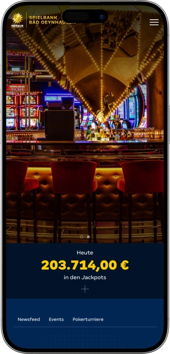
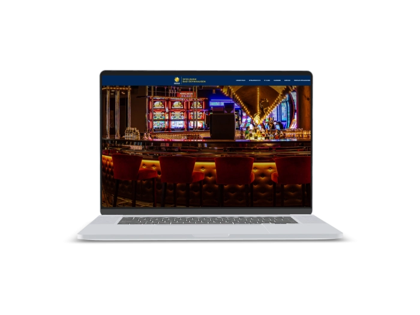

Exklusives Willkommensangebot von
Exklusives Willkommensangebot von
Merkur Spielbank Bad Oeynhausen — Casino mit Roulette, Black Jack, Poker, Automaten und Diamond Bar
Top-Casino
Bonusdetails
Casino
Boni
Rate
Frei Spins
Mehr Infos
Erhalten
Vorteile
- In der MERKUR SPIELBANK Bad Oeynhausen verbinden wir klassisches Spiel, moderne Automaten, Poker und ein Ambiente mit Las-Vegas-Charakter.
-
Progressive Jackpots steigern jeden Spielabend.
-
American Roulette bringt echte Casinospannung.
-
Black Jack läuft täglich am Abend.
-
Poker bietet Strategie, Einsatz und Gewinnchancen.
-
M-Card sichert kostenfreien Eintritt.
-
Diamond Bar schafft stilvolle Abendmomente.
-
Werre-Park macht Anreise besonders bequem.
- Unser Casino ist ideal für Spielfreude, Drinks, Events und entspannte Abende. Wir setzen auf Service, Sicherheit, starke Gewinnmomente und ein Erlebnis, das vom Check-in bis zum letzten Spielzug überzeugt.
Merkur Spielbank Bad Oeynhausen App



Über das Merkur Spielbank Bad Oeynhausen
In der MERKUR SPIELBANK Bad Oeynhausen stehen Gewinnmomente, echte Tischspiele und moderne Automaten im Mittelpunkt. Unser Casino verbindet Spielkultur, M-Card-Komfort, Events und die Diamond Bar zu einem runden Abenderlebnis.
- Jackpots mit sechsstelliger Spannung.
- Poker Buy-in 100 €.
- Gameshow-Hauptgewinn 10.000 €.
Die MERKUR SPIELBANK Bad Oeynhausen empfängt unsere Gäste mit moderner Casinoatmosphäre und einem klaren Las-Vegas-Gefühl. Wir schaffen einen Ort, an dem klassisches Spiel, Automaten und Entertainment zu einem besonderen Abend werden. In unserem Casino spielen Gäste American Roulette, Black Jack, Poker und moderne Slots. Wir gestalten den Einstieg angenehm, die Abläufe klar und das Spielerlebnis lebendig. Die Diamond Bar ergänzt den Besuch mit Drinks, Snacks und entspannten Momenten zwischen den Spielrunden. Durch unsere Lage am Werre-Park und im MAGICS-Umfeld lässt sich der Casinoabend ideal mit weiteren Freizeitangeboten verbinden. Unser Team setzt auf aufmerksamen Service, sichere Abläufe und eine offene, gastfreundliche Haltung. Bei uns treffen Spielspannung, Gespräche, Events und Baratmosphäre aufeinander. Mit der M-Card machen wir den Besuch für regelmäßige Gäste noch komfortabler. Die MERKUR SPIELBANK Bad Oeynhausen steht für stilvolle Unterhaltung, starke Momente und ein Casinoerlebnis, das in Erinnerung bleibt.

Wir gestalten den Einstieg angenehm, die Abläufe klar und das Spielerlebnis lebendig. Die Diamond Bar ergänzt den Besuch mit Drinks, Snacks und entspannten Momenten zwischen den Spielrunden. Durch unsere Lage am Werre-Park und im MAGICS-Umfeld lässt sich der Casinoabend ideal mit weiteren Freizeitangeboten verbinden. Unser Team setzt auf aufmerksamen Service, sichere Abläufe und eine offene, gastfreundliche Haltung. Bei uns treffen Spielspannung, Gespräche, Events und Baratmosphäre aufeinander. Mit der M-Card machen wir den Besuch für regelmäßige Gäste noch komfortabler. Die MERKUR SPIELBANK Bad Oeynhausen steht für stilvolle Unterhaltung, starke Momente und ein Casinoerlebnis, das in Erinnerung bleibt.
Merkur Spielbank Bad Oeynhausen: Öffnungszeiten, Zahlungsmethoden und Treueprogramm
MERKUR SPIELBANK Bad Oeynhausen — Las-Vegas-Flair, Spiel und Abendkomfort
In der MERKUR SPIELBANK Bad Oeynhausen verbinden wir ein modernes Casinoambiente mit dem Lebensgefühl von Las Vegas. Unser Casino liegt direkt am Werre-Park und im Umfeld von MAGICS, sodass sich Spiel, Kino, Gastronomie und Freizeit bequem zu einem Abend kombinieren lassen. In unseren Spielbereichen erleben Gäste American Roulette, Black Jack, Texas Hold’em Poker, Slot Machines, Bingoautomaten, Multi Roulette und verschiedene Jackpotanlagen. Das klassische Spiel startet am Abend, während unsere Automaten bereits früher für Spielfreude sorgen. Die Diamond Bar ist unser stilvoller Treffpunkt für Drinks, Snacks und entspannte Pausen zwischen den Spielrunden. Für eine komfortable Auszeit bieten unsere Hotelarrangements mit dem Hotel Stickdorn und dem Mercure Hotel Bad Oeynhausen City attraktive Extras wie Frühstück, Welcome Drink, freien Eintritt und Glücksjeton. Mit Pokerturnieren, Gameshowformaten, Bingo-Abenden und saisonalen Aktionen bringen wir regelmäßig zusätzliche Energie in unser Haus. Die M-Card macht den Besuch für Stammgäste noch bequemer, etwa durch schnellen Check-in, kostenfreien Eintritt und kostenlose alkoholfreie Getränke. Unser Team sorgt für klare Abläufe, freundlichen Service und ein Casinoerlebnis, das vom ersten Moment an hochwertig wirkt. Die MERKUR SPIELBANK Bad Oeynhausen ist die richtige Adresse für Spiel, Barkultur, Events und einen Abend mit besonderem Charakter.
| Zone | Tage | Zeit |
|---|---|---|
| Automatenspiel | Sonntag–Donnerstag | 11:00–03:00 |
| Automatenspiel | Freitag–Samstag | 11:00–04:00 |
| Klassisches Spiel | Sonntag–Donnerstag | 18:00–02:00 |
| Klassisches Spiel | Freitag–Samstag | 18:00–03:00 |
| Texas Hold’em Poker | Täglich nach Plan | ab 19:00 |
| Diamond Bar | An Spieltagen | Während des Casinoabends |
MERKUR SPIELBANK Bad Oeynhausen — Service, Zahlung, Währung und Gewinnauszahlung
In der MERKUR SPIELBANK Bad Oeynhausen legen wir großen Wert auf ein Serviceerlebnis, das vom Empfang bis zur Auszahlung klar, freundlich und professionell bleibt. Unsere Mitarbeitenden begleiten Gäste beim Check-in, bei Fragen zur M-Card, an der Kasse, im Automatenbereich und rund um das klassische Spiel. An den Tischen sorgen erfahrene Croupiers für einen geordneten Spielablauf, während unser Team im Automatenspiel die Funktionen und Möglichkeiten der Geräte verständlich erklärt. Wir möchten, dass neue Gäste schnell Orientierung finden und regelmäßige Besucher ihre Abläufe besonders bequem erleben. Diese Kombination aus persönlicher Ansprache, Sicherheit und Gastfreundschaft prägt unser Casino.
Die Hauptsprache in der MERKUR SPIELBANK Bad Oeynhausen ist Deutsch, gleichzeitig sind viele Spielbegriffe wie Roulette, Black Jack, Poker, Jackpot, Buy-in und Blinds international verständlich. Unser Team erklärt Abläufe ruhig, direkt und praxisnah, damit auch Gäste ohne umfangreiche Casinoerfahrung sicher starten können. Bei Spielregeln, Tischabläufen, Automatenfunktionen und Barservice achten wir auf klare Hinweise. So entsteht ein Besuch, der gut geführt wirkt, ohne die Freiheit des Gastes einzuschränken. Besonders beim ersten Casinoabend schaffen diese Erklärungen Vertrauen und eine angenehme Atmosphäre.
Unsere Zahlungen sind auf Euro ausgerichtet, damit Einsätze, Jetons, Automatenspiel und Auszahlungen transparent bleiben. An der Kasse können Gäste mit Bargeld arbeiten und dort, wo es im Kassenprozess vorgesehen ist, EC-/girocard oder Kreditkarte nutzen. Für Kartenzahlungen ist die physische Karte wichtig, da Zahlungen per Smartphone oder Smartwatch an unseren Kassen nicht eingesetzt werden. Im Umfeld des Werre-Park stehen Sparkassen-Geldautomaten zur Verfügung, sodass Bargeldversorgung bequem in den Besuch eingeplant werden kann. Fremdwährung sollte vor dem Besuch gewechselt werden, denn unser Spielbetrieb ist klar auf Euro und sichere Kassenabläufe ausgelegt.
Gewinne zahlen wir in der MERKUR SPIELBANK Bad Oeynhausen über die Kasse oder, bei passender Nutzung, über selbstständige Auszahlungsmöglichkeiten mit der M-Card aus. Der Ablauf ist bewusst klar gehalten: Identität, Betrag und Vorgang werden geprüft, danach erfolgt die Auszahlung nach unseren Regeln. Auch bei größeren Gewinnmomenten begleitet unser Team den Prozess diskret, sicher und angenehm. Private Gewinne aus Glücksspielen sind in der Regel nicht als Einkommen zu versteuern, während eine professionelle und regelmäßige Spieltätigkeit, besonders im Poker, steuerlich anders bewertet werden kann. Für persönliche Steuerfragen empfiehlt sich individuelle Beratung; wir sorgen im Casino für korrekte Auszahlung und verlässlichen Service.
MERKUR SPIELBANK Bad Oeynhausen — Besuchsregeln, Einlass und bequeme Anfahrt
In der MERKUR SPIELBANK Bad Oeynhausen verbinden wir ein offenes Besuchsgefühl mit klaren Regeln für Sicherheit, Komfort und Spielqualität. Der Zutritt zu unserem Casino ist ab 18 Jahren möglich, deshalb ist ein gültiger Identitätsnachweis bei jedem Besuch wichtig. Am besten bringen Gäste Reisepass oder Personalausweis mit, da Führerscheine und ähnliche Dokumente für den Einlass nicht ausreichen. Einen streng festgelegten Dresscode gibt es bei uns nicht, gepflegte Freizeitkleidung und elegante Abendgarderobe passen gleichermaßen. Jacken und Kopfbedeckungen werden vor dem Betreten der Spielbereiche bequem an der Garderobe abgegeben. In unserem Haus gelten Regeln für respektvolles Verhalten, geordnete Spielabläufe und sichere Kassenprozesse. Die Zugangskontrolle und Videoüberwachung unterstützen ein geschütztes Umfeld für Gäste und Mitarbeitende. Durch unsere Lage am Werre-Park und im MAGICS-Komplex ist die Anreise mit Auto oder öffentlichen Verkehrsmitteln besonders einfach. Rund um den Werre-Park stehen zahlreiche kostenlose Parkplätze zur Verfügung. Vom ZOB Bad Oeynhausen fahren die Buslinien BO1, BO4, BO5 und BO7 direkt in Richtung Werre-Park. So lässt sich unser Casinobesuch bequem mit Shopping, Kino, Gastronomie oder einem längeren Abendprogramm verbinden.
Einlass und Dokumente
- • Der Zutritt ist ab 18 Jahren möglich und wird durch eine klare Identitätskontrolle geschützt.
- • Reisepass oder Personalausweis sind die passenden Dokumente für einen reibungslosen Check-in.
- • Die Kontrolle am Eingang sorgt für Spielsicherheit, Jugendschutz und ein verantwortungsvolles Casinoerlebnis.
Dresscode
- • In unserem Casino ist gepflegte Freizeitkleidung ebenso willkommen wie elegante Abendgarderobe.
- • Smart Casual passt besonders gut zu Roulette, Black Jack, Poker und der Diamond Bar.
- • Jacken und Kopfbedeckungen geben Gäste vor dem Spielbereich einfach an der Garderobe ab.
Verhalten im Casino
- • Wir setzen auf respektvolles Miteinander, freundliche Kommunikation und klare Spielabläufe.
- • Fragen zu Einsätzen, Regeln oder Automatenfunktionen beantwortet unser Team gern vor dem Spiel.
- • So bleibt der Besuch angenehm, sicher und für neue wie erfahrene Gäste verständlich.
Anfahrt und Parken
- • Unser Casino liegt am Werre-Park und ist bequem über die Mindener Straße erreichbar.
- • Rund um den Werre-Park stehen 2.400 kostenlose Parkplätze für Autofahrer bereit.
- • Vom ZOB Bad Oeynhausen bringen die Linien BO1, BO4, BO5 und BO7 Gäste schnell zum Center.
- • Ladestationen für E-Autos ergänzen den komfortablen Besuch im Werre-Park-Umfeld.
MERKUR SPIELBANK Bad Oeynhausen — die M-Card für mehr Komfort
In der MERKUR SPIELBANK Bad Oeynhausen ist die M-Card unser Schlüssel zu einem noch bequemeren Casinobesuch. Wir haben diese Gästekarte für Besucher entwickelt, die ihren Abend schneller starten, einfacher einchecken und praktische Vorteile direkt vor Ort nutzen möchten. Die M-Card kann ab dem dritten Besuch innerhalb eines Jahres erhalten werden. Gäste mit früherer VIP-Karte bekommen die M-Card bei ihrem nächsten Besuch besonders unkompliziert. Der Fokus liegt nicht auf komplizierten Statusregeln, sondern auf klaren Vorteilen, die den Besuch sofort spürbar verbessern. Mit der M-Card ist der Eintritt kostenfrei, während der reguläre Eintritt 5 € beträgt. Außerdem ermöglicht die Karte einen schnellen Check-in, was den Beginn des Casinoabends angenehm beschleunigt. Kostenlose alkoholfreie Getränke ergänzen den Komfort während des Aufenthalts. Bei passenden Vorgängen erleichtert die Karte außerdem die selbstständige Auszahlung von Gewinnen. Wir entwickeln die M-Card stetig weiter und bereiten zusätzliche Extras wie M-Card Club und digitale Gutscheine vor. Für unser Casino ist die Karte ein modernes Serviceinstrument, das Stammgäste wertschätzt. Besonders für Pokerspieler, Automatengäste, Eventbesucher und Fans der Diamond Bar macht die M-Card den Besuch noch runder.
Registrierungsbedingungen
- • Mindestalter 18 Jahre — die M-Card ist an den regulären Casinozutritt gebunden.
- • 3 Besuche pro Jahr — ab dem dritten Besuch kann die Gästekarte ausgegeben werden.
- • Gültiger Identitätsnachweis — die Ausgabe erfolgt nach korrekter Prüfung der Personalien.
- • Persönliche Nutzung — die Karte ist auf den jeweiligen Gast zugeschnitten.
- • RFID-Technik — moderne Kartenfunktionen erleichtern Check-in und Serviceprozesse.
Stufen und Erhalt
- • Einstieg ohne Karte — die ersten Besuche machen mit Casino, Spielen und Service vertraut.
- • M-Card nach 3 Besuchen — der zentrale Status für wiederkehrende Gäste.
- • VIP-Übergang — bestehende VIP-Karten werden beim nächsten Besuch komfortabel auf M-Card umgestellt.
- • M-Card Club — ein vorbereiteter Zusatzbereich für kommende Vorteile und digitale Extras.
- • Mehr Komfort pro Besuch — regelmäßige Gäste profitieren besonders von schnellem Check-in und kostenfreiem Eintritt.
Vorteile und Boni
- • Kostenfreier Eintritt — 5 € Eintrittsvorteil bei jedem passenden Besuch.
- • Schneller Check-in — weniger Wartezeit und ein direkterer Start in den Casinoabend.
- • Kostenlose alkoholfreie Getränke — eine angenehme Ergänzung während des Aufenthalts.
- • Selbstständige Gewinnauszahlung — mehr Komfort und Diskretion bei passenden Auszahlungen.
- • Digitale Gutscheine — vorbereitete Zusatzangebote für noch mehr Servicewert.
- • M-Card Club — ein kommender Rahmen für exklusive Gästevorteile.
- • Persönlicher Besuchskomfort — die Karte macht Abläufe schneller, moderner und einfacher.
Softwareanbieter
Unterhaltung und Gaming im Merkur Spielbank Bad Oeynhausen
MERKUR SPIELBANK Bad Oeynhausen — Gewinne, Aktionen und besondere Spielmomente
In der MERKUR SPIELBANK Bad Oeynhausen schaffen wir Vorteile nicht nur über die M-Card, sondern auch über Spiele, Turniere, Jackpotanlagen, Hotelarrangements und Eventformate. Unsere Gäste erleben Gewinnchancen bei American Roulette, Black Jack, Poker und modernen Automaten. Progressive Jackpotsysteme verleihen dem Casinoabend zusätzliche Spannung, weil die angezeigten Summen beeindruckende Höhen erreichen können. In verschiedenen Zeitfenstern zeigen unsere Jackpottafeln Gesamtsummen im sechsstelligen Bereich. Im Poker setzen wir auf Texas Hold’em mit 100 € Buy-in und Blinds ab 1 €/3 €. Für Turniergäste sind unsere beliebten Sonntagsturniere und die saisonalen Pokerpläne besonders attraktiv. Showformate bringen zusätzliche Preismechaniken in unser Haus und machen den Abend auch für Entertainment-Gäste spannend. Die Big Casino Gameshow ist mit einem Hauptgewinn von 10.000 € ein starkes Highlight. Bingo-Events bringen Interaktion, Stimmung und Sondergewinne in den Abend. Hotelarrangements sorgen für zusätzlichen Wert: Im Hotel Stickdorn starten Pakete mit Frühstück, freiem Eintritt, Welcome Drink und Glücksjeton ab 99 € im Einzelzimmer und 139 € im Doppelzimmer. Das Mercure Hotel Bad Oeynhausen City ergänzt mit bis zu 10 % Ermäßigung auf die Tagesrate, Frühstück, Wasser, WLAN, Late Check-out nach Verfügbarkeit, freiem Eintritt, Welcome Drink und Glücksjeton. So verbinden wir Spielspannung, Gewinnmomente, Komfort und Abendunterhaltung.
Jackpots und Spielgewinne
- • Progressive Jackpots — angezeigte Gesamtsummen können sechsstellige Bereiche erreichen.
- • Black Jack 21 + 3 Jackpot — ein Kartenformat mit zusätzlicher Gewinndynamik.
- • Poker Heads Up Hold’em Jackpot — Pokerspannung mit schnellen Entscheidungen.
- • Lightning Link — moderner Automatenspaß mit starker Jackpotatmosphäre.
- • Huff’n Puff — ein unterhaltsames Slot-Format mit besonderem Spielgefühl.
Poker und Turniere
- • Texas Hold’em Cash Game — 100 € Buy-in und Blinds ab 1 €/3 €.
- • Ein Pokertisch sonntags bis donnerstags — ideal für den regelmäßigen Abendbesuch.
- • Zwei Pokertische freitags und samstags — mehr Dynamik für das Wochenende.
- • Sonntagsturniere — unser beliebter Turnierrhythmus für Pokergäste.
- • Reservierung bis 19:00 — eine bequeme Planung für den Pokerabend.
Events und Sonderaktionen
- • Big Casino Gameshow — ein Showformat mit 10.000 € Hauptgewinn.
- • Bingo mit Cassy — Bingo als Liveerlebnis mit Charme, Humor und Sondergewinnen.
- • Bingo Banger — interaktive Show mit Partyatmosphäre und kostenfreien Bingokarten am Eventtag.
- • Automatenturnier — großes Spielformat mit garantiertem Preispool über 250.000 € in der Aktionswelt.
- • Saisonale Highlights — besondere Abende, Shows und Spielaktionen für noch mehr Erlebniswert.
Hotel- und Freizeitextras
- • Hotel Stickdorn — Pakete ab 99 € im Einzelzimmer und 139 € im Doppelzimmer.
- • Mercure Glücksritter — bis zu 10 % Ermäßigung auf die Tagesrate plus Casinoextras.
- • Welcome Drink — ein angenehmer Start in den Casinoabend.
- • Glücksjeton — ein kleiner Spielimpuls mit besonderem Besuchsgefühl.
- • Freier Eintritt — zusätzlicher Wert in ausgewählten Hotelpaketen und mit M-Card.
MERKUR SPIELBANK Bad Oeynhausen — beliebte Spiele und Spielbereiche
In der MERKUR SPIELBANK Bad Oeynhausen setzen wir auf Spiele, die Spannung, klare Abläufe und unterschiedliche Erlebnistiefen bieten. Unser Spielangebot umfasst American Roulette, Black Jack, Poker, Slot Machines, Bingoautomaten, Multi Roulette und verschiedene Jackpotanlagen. Roulette gehört zu den großen Casinoklassikern, weil einfache Einsatzmöglichkeiten, das drehende Rad und der Moment der Gewinnzahl perfekt zusammenpassen. Bei uns erleben Gäste American Roulette als schnelle Las-Vegas-Variante, bei der sie ihre Einsätze selbst platzieren. Black Jack überzeugt durch ein verständliches Ziel: näher an 21 kommen als der Dealer, ohne den Wert zu überschreiten. Poker ist ideal für Gäste, die Strategie, Menschenkenntnis, Position und Timing schätzen. In unserem Casino liegt der Fokus auf Texas Hold’em mit Cash Games und Turnierformaten. Moderne Automaten bieten Tempo, Themenvielfalt, Linienspiel und Jackpotspannung. Bingoautomaten ergänzen das Angebot mit einem leichten, schnell verständlichen Spielrhythmus. Multi Roulette bringt die Rouletteenergie in den Automatenbereich. Für neue Gäste halten wir Spielerklärungen bereit, damit der Einstieg angenehm und sicher gelingt.
Klassische Tischspiele
- • American Roulette — die dynamische Roulettevariante mit selbstständiger Einsatzplatzierung und Croupierführung.
- • Black Jack — ein Kartenspiel mit klarer 21er-Logik und spannenden Entscheidungen.
- • Texas Hold’em Poker — Strategie, Blinds ab 1 €/3 € und 100 € Buy-in im Cash Game.
- • Pokerturniere — strukturierte Wettbewerbe für Gäste, die Turnieratmosphäre lieben.
Automatenbereich
- • Slot Machines — moderne Automaten mit Themenwelten, Linienspiel und Bonusfunktionen.
- • Bingoautomaten — leicht verständliche Spieldynamik mit schnellem Ergebnisgefühl.
- • Multi Roulette — Roulettespannung im komfortablen Automatenformat.
- • Jackpotanlagen — zusätzliche Gewinnenergie durch wachsende Preissummen.
Besondere Spielmomente
- • Black Jack 21 + 3 — Kartenspannung mit zusätzlicher Kombinationsdynamik.
- • Heads Up Hold’em — Pokergefühl mit direktem Duellcharakter.
- • Lightning Link — farbstarker Automatenspaß mit Jackpotatmosphäre.
- • Live-Poker-Abende — echte Tischinteraktion mit Strategie, Einsatz und Spannung.
MERKUR SPIELBANK Bad Oeynhausen — Einsätze nach Spielen und Zonen
In der MERKUR SPIELBANK Bad Oeynhausen richten sich Einsätze nach Spielbereich, Tisch, Automat und aktuellem Format. Wir bieten Gästen flexible Möglichkeiten: vom Automatenspiel über American Roulette und Black Jack bis zum Poker Cash Game. Für Texas Hold’em gelten klare Orientierungswerte mit 100 € Buy-in und Blinds ab 1 €/3 €. Die aktuellen Limits an Roulette, Black Jack, Automaten und Multi Roulette werden direkt im Casino transparent am jeweiligen Spielplatz angezeigt.
| Spiel oder Zone | Mindesteinsatz | Maximaleinsatz |
|---|---|---|
| Texas Hold’em Poker | Buy-in 100 € | Nach Tischstruktur |
| Poker Blinds | 1 €/3 € | Nach aktueller Runde |
| American Roulette | Nach Tischlimit | Nach Tischlimit |
| Black Jack | Nach Tischlimit | Nach Tischlimit |
| Slot Machines | Nach Automateneinstellung | Nach Jackpotsystem |
| Bingoautomaten | Nach Automateneinstellung | Nach verfügbarem Gewinn |
| Multi Roulette | Nach Terminallimit | Nach Terminallimit |
| Jackpotanlagen | Nach Spielbedingung | Bis zur progressiven Summe |
MERKUR SPIELBANK Bad Oeynhausen — Events, Shows und Abendentertainment
In der MERKUR SPIELBANK Bad Oeynhausen verstehen wir unser Casino als Ort für Spiel, Begegnung und abendfüllende Unterhaltung. Unsere Events verstärken die Atmosphäre im Haus, bringen Interaktion in den Abend und schaffen immer neue Besuchsanlässe. Pokerturniere haben dabei einen besonderen Stellenwert, denn sie sprechen Gäste an, die Strategie, Struktur und Wettbewerb lieben. Regelmäßige Sonntagsturniere und aktuelle Turnierpläne machen das Pokerangebot lebendig und gut planbar. Auch Zuschauer und Begleitpersonen spüren an solchen Abenden die besondere Spannung im Raum.
Unsere Showformate geben dem Casinoabend eine zusätzliche Bühne. Die Big Casino Gameshow kombiniert Auswahlspiele, Umschläge, Boxen, Glücksrad und einen Hauptgewinn von 10.000 €. Bingo mit Cassy macht aus Bingo ein Liveerlebnis mit Humor, Charme und Sondergewinnen. Der Bingo Banger mit Lilo von Kiesenwetter bringt Partyatmosphäre, Interaktion und moderne Showenergie in unser Haus. Diese Formate passen perfekt zur Diamond Bar, in der Drinks, Snacks und entspannte Gespräche den Abend abrunden.
Der Late-Night-Charakter unseres Casinos entsteht durch lange Öffnungszeiten, Livetische, Barstimmung und besondere Events. Gäste können den Abend an modernen Automaten beginnen, später zu Black Jack oder American Roulette wechseln, Poker spielen und danach in der Diamond Bar verweilen. Unser Casinonight-Konzept verbindet Licht, Spiel, Gespräche, Musikmomente bei Events und die Energie eines langen Abends. Durch die Lage am Werre-Park und im MAGICS-Umfeld lässt sich der Besuch mit Kino, Gastronomie und Freizeitangeboten kombinieren.
Saisonale Veranstaltungen machen unseren Kalender besonders vielfältig. Jubiläumsevents, Themenabende, Pokerpläne, Automatenturniere und Special Nights setzen regelmäßig neue Akzente. Wir bevorzugen Formate, bei denen Teilnahme verständlich, Stimmung offen und Erlebniswert hoch ist. So wird die MERKUR SPIELBANK Bad Oeynhausen zu einem Treffpunkt für Spiel, Barkultur, Events, Shows und besondere Abendmomente.
Alle Unterhaltungsformate
- • Poker Cash Games — Texas Hold’em mit Strategie, Tischgesprächen und echtem Livegefühl.
- • Sonntagsturniere — regelmäßige Pokerwettbewerbe mit strukturierter Turnieratmosphäre.
- • Big Casino Gameshow — Showformat mit Umschlägen, Boxen, Glücksrad und 10.000 € Hauptgewinn.
- • Bingo mit Cassy — Bingo als Liveabend mit Humor, Charme und Sondergewinnen.
- • Bingo Banger — interaktive Partyshow mit kostenfreien Bingokarten am Eventtag.
- • Automatenturnier — großes Spielformat für Fans moderner Automaten.
- • Diamond Bar Abende — Drinks, Snacks und stilvolle Pausen zwischen den Spielen.
- • Roulette Nights — klassisches Casinogefühl mit der Dynamik von American Roulette.
- • Black Jack Abende — tägliche Kartenspannung ab dem frühen Abend.
- • MAGICS und UCI LUXE — perfekte Ergänzung für Kino, Freizeit und längere Abendplanung.
MERKUR SPIELBANK Bad Oeynhausen — Bars, Hotels und Erholung rund ums Casino
In der MERKUR SPIELBANK Bad Oeynhausen beginnt Erholung nicht erst nach dem Spiel, sondern ist Teil des gesamten Abends. Unser Casino verbindet Spiel, Drinks, Snacks, Begegnungen und eine besonders praktische Lage zu einem runden Erlebnis. Die Diamond Bar ist unser zentraler Ort für Pausen zwischen den Spielen, Gespräche mit Freunden und einen entspannten Abschluss des Abends. Ihr leuchtender, tetraederförmiger Diamant schafft einen starken optischen Akzent und prägt die Atmosphäre im Haus. Hier genießen Gäste Drinks, kleine Snacks und genau das Casinoflair, das perfekt zu Roulette, Black Jack, Poker und Automaten passt.
Für Gäste, die den Besuch zu einer kurzen Auszeit machen möchten, bieten unsere Hotelarrangements mit dem Hotel Stickdorn und dem Mercure Hotel Bad Oeynhausen City attraktive Möglichkeiten. Das Hotel Stickdorn kombiniert Übernachtung, reichhaltiges Frühstücksbuffet, freien Eintritt in die Spielbank, Welcome Drink und Glücksjeton; die Paketpreise starten bei 99 € im Einzelzimmer und 139 € im Doppelzimmer nach Verfügbarkeit. Das Mercure Hotel Bad Oeynhausen City ergänzt mit dem Paket „Glücksritter“ bis zu 10 % Ermäßigung auf die aktuelle Tagesrate, Frühstück, eine große Flasche Wasser, kostenfreies Highspeed-WLAN und Late Check-out bis 13:00 nach Anfrage und Verfügbarkeit. Auch hier gehören freier Eintritt, Welcome Drink und Glücksjeton zum Casinoerlebnis. So lassen sich Abend, Nacht und Morgen besonders angenehm verbinden.
Die Lage am Werre-Park und im MAGICS-Umfeld macht unsere Spielbank ideal für kombinierte Freizeitplanung. Vor dem Spiel können Gäste shoppen, essen, Kino im UCI LUXE einplanen oder direkt zu den abendlichen Tischspielen kommen. Für Autofahrer stehen rund um den Werre-Park 2.400 kostenlose Parkplätze bereit. Ladestationen für Elektrofahrzeuge ergänzen die komfortable Anreise. Dadurch wird unser Casino zum Teil eines größeren Abendprogramms mit Spiel, Gastronomie, Kino und entspanntem Aufenthalt.
Wir möchten, dass der Besuch in der MERKUR SPIELBANK Bad Oeynhausen logistisch einfach und emotional hochwertig bleibt. Gäste können den Abend an Automaten beginnen, in der Diamond Bar pausieren, zu Black Jack wechseln, Poker spielen oder ein Event erleben. Für Paare, Gruppen und Einzelgäste entsteht ein flexibler Rahmen, in dem jeder seinen eigenen Rhythmus findet. Wir verbinden Spiel, Barkultur, Hotelextras und Freizeitangebote zu einem Abend, der sich durchdacht, bequem und besonders anfühlt.
Orte zum Verweilen
- • Diamond Bar — stilvolle Bar im Casino mit Drinks, Snacks und funkelndem Diamantakzent.
- • Hotel Stickdorn — Arrangement mit Frühstück, freiem Eintritt, Welcome Drink und Glücksjeton.
- • Mercure Hotel Bad Oeynhausen City — „Glücksritter“-Paket mit bis zu 10 % Vorteil und Casinoextras.
- • Werre-Park — Shopping- und Freizeitumfeld direkt neben unserem Casino.
- • MAGICS — Entertainment-Komplex für ein vielseitiges Abendprogramm.
- • UCI LUXE — Kinoangebot in unmittelbarer Nähe für die Planung vor oder nach dem Spiel.
- • Werre-Park Parkplätze — 2.400 kostenlose Stellplätze für eine bequeme Anreise.
- • E-Ladestationen — praktische Lademöglichkeiten für Elektrofahrzeuge.
FAQ
Ja, unser Casino eignet sich sehr gut für den ersten Besuch. Unser Team erklärt Abläufe, Spiele und Servicepunkte verständlich.
Eine Reservierung ist besonders für abendliche Pokerrunden sinnvoll. Reservierte Plätze sollten rechtzeitig wahrgenommen werden, da sie ab 19:00 verfallen können.
Ja, unser Stil orientiert sich am American Way of Life und an der Energie von Las Vegas. Das zeigt sich in Spielbereichen, Licht, Baratmosphäre und Events.
Automaten sind besonders leicht zugänglich, Roulette und Black Jack lassen sich nach einer kurzen Erklärung gut verstehen. Poker passt zu Gästen, die Strategie und Wettbewerb mögen.
Die M-Card bietet kostenfreien Eintritt, schnellen Check-in, kostenlose alkoholfreie Getränke und komfortable Auszahlungsmöglichkeiten. Sie macht regelmäßige Besuche deutlich bequemer.
Ja, im Umfeld des Werre-Park stehen Ladestationen zur Verfügung. Dadurch lässt sich auch ein längerer Casinoabend komfortabel planen.